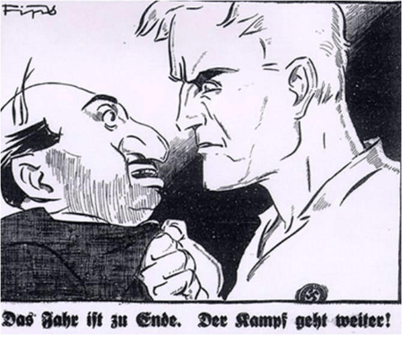

Antisemitismo nella storia
Affrontando il grande tema della Shoah la prima, inevitabile, domanda riconduce alle motivazioni storiche dell'antisemitismo; gli ebrei, nel corso dei secoli e delle varie epoche, furono spesso oggetto e bersaglio di pregiudizi e di discriminazioni analizziamo, di seguito, le origini antiche del diffuso sentimento antisemita.
L'ANTISEMITISMO NELLA STORIA ANTICA
Il primo sentimento antisemita risale al 1000 a.C. dopo la liberazione degli ebrei dalla schiavitù egiziana. Sembra abbastanza probabile che gli egizi abbiano considerato insultante l'annuale celebrazione ebraica della loro liberazione e della disfatta dell'esercito faraonico; gli ebrei infatti divulgarono nel mondo antico una loro versione dell'accaduto facendo trapelare un'immagine negativa della popolazione ebraica presso i centri di potere dell'antico Egitto. Non facile da definire il rapporto tra i giudei e il mondo ellenistico-romano. E' da rilevare che la presenza ebraica nel mondo ellenistico venne considerata utile e leale fino al momento dell'espansione di Roma nei regni ellenistici, II sec.a.C., quando si manifestarono scontri politico-sociali e culturali-religiosi tra giudei e romani. In realtà i Romani furono sempre abbastanza tolleranti nei confronti dei culti religiosi delle popolazioni sottomesse, ma non mancarono gli attriti tra le due componenti sociali e religiose che sfociarono nelle sanguinise guerre giudaiche del 66 - 73 d.C. che, nate dopo l'occupazione romana della Giudea, causarono numerose morti tra gli ebrei ribelli. L'idea teocratica degli ebrei per cui politica e religione coincidevano e l'attesa di un Messia come re degli uomini, non poteva non infastidire il potere politico romano che represse duramente ogni tentativo di rivolta giudaico. Lo scontro che oppose Roma e Gerusalemme, secondo le stime provocò oltre un milione e centomila morti, la guerra inoltre provocò la distruzione del tempio di Gerusalemme, 70 d.C. dando così inizio alla diaspora ebraica, dispersione degli ebrei in tutto il mondo.
Nicolas Poussin (1594-1665), "La distruzione del Tempio di Gerusalemme", olio su tela
Gli stereotipi negativi sulla popolazione ebraica non sono inediti. Molti scrittori di età ellenistica avevano accusato i giudei di essere xenofobi, asociali, barbari e sanguinari. Anche molti autori latini contestarono le usanze ebraiche della circoncisione, del riposo sabbatico, del rifiuto di certi cibi e di certe usanze pubbliche del mondo romano. Il pregiudizio nei confronti di questo popolo si inserisce, verosimilmente, nel particolarismo che lo distingueva da tutte le altre tradizioni: gli ebrei avevano orrore dell'idolatria e del politeismo, non partecipavano ai culti pagani delle popolazioni con cui si trovavano a convivere, rifiutano i loro cibi e il loro vino e non li invitavano alle loro feste religiose. Da qui l'accusa di misantropia, xenofobia, esclusivismo, arroganza. Gli ebrei, infine, avevano un rapporto esclusivo con il loro Dio, che non condividevano con nessuno, e che non rappresentavano con immagini; inoltre non riconoscendo le divinità dello Stato e delle città in cui vivevano, entravano in continuo conflitto con il diritto di cittadinanza. Va detto che anche gli ebrei nutrirono pregiudizi nei confronti degli altri popoli, accusandoli spesso di unioni sessuali promiscue e di scarso rigore etico nel rispetto delle leggi, che erano invece fondamentali nel loro sistema di vita. In epoca romana, con Augusto e Tiberio, poterono godere della religio licita, ovvero di una legislazione che ne tutelava la libertà di professare il culto, ma quando l'imperatore Caligola affigge la sua immagine, divinizzandola, nelle sinagoghe gli ebrei avvertono la profanazione del proprio credo e iniziano quella serie di rivolte che porteranno alla rottura con il mondo romano e alla distruzione del tempio nel 70 d.C da parte di Tito e alla già citata diaspora.
ANTISEMITISMO CRISTIANO
Secondo la maggior parte di storici, la prima forma di odio verso gli ebrei era cristiana, era l'accusa di aver crocefisso Gesù. Le motivazioni si possono racchiudere in quattro tipologie: tipo generico, religioso, razziale, politico economico. Le motivazioni razziali sono quelle più recenti. All'inizio del Medioevo l'accusa di deicidio era la principale giustificazione della Chiesa per la persecuzione del popolo ebraico. Tuttavia negli anni spesso si cercò di convivere tra cristiani e ebrei per via di un legame molto antico, infatti gli ebrei venivano considerati come i possessori delle antiche verità su cui si basava il cristianesimo. Le due religioni condividono dei testi sacri cioè quello che per i cristiani è l'Antico Testamento, oltretutto veniva ricordato che Gesù era nato da madre ebrea e secondo il Vecchio Testamento il popolo ebreo era stato scelto da Dio e si può trovare conferma anche nei vangeli del Nuovo Testamento. Nonostante questo legame la divisione tra le due religioni doveva essere netta, le unioni erano assolutamente vietate da entrambe le parti. A scandire la separazione tra esse, un ruolo fondamentale venne rivestito da papa Innocenzo III che convocò nel 1213 a Roma il concilio Lateranense IV in cui vennero approvati alcuni importantissimi decreti riguardanti gli ebrei. Il primo decreto che li riguardava, il 67, permetteva loro l'usura con moderazione (mentre ai cristiani era vietata) infatti non potevano richiedere interessi esagerati ai cristiani. Per quanto riguarda l'usura è da notare la tolleranza dei poteri imperiali nei confronti degli ebrei, da cui spesso dipendevano economicamente per il prestito di denaro con cui si finanziavano le operazioni militari. È doveroso osservare come la diffusione della discriminazione verso gli ebrei si diffonda esponenzialmente durante il passaggio dalla società feudale dall'autoconsumo a quella più dinamica e attiva del mercato.
Cristo scaccia gli usurai ebrei fuori dal tempio, incisione di Lucas Cranach il Vecchio. (1472 - 1553)
Con il decreto 68 vi è un'importantissima regola: gli ebrei devono distinguersi dai cristiani
per il modo di vestire indossando anche un simbolo di riconoscimento che successivamente verrà riutilizzato durante
il nazismo. Questa distinzione era nata per impedire l'unione tra cristiani ed ebrei ma finì per diventare ulteriore
motivo di discriminazione. Oltre alle accuse della Chiesa, tra la popolazione giravano numerose leggende su questo
popolo tra cui l'uccisione rituale di bambini cristiani per usare il sangue in dei loro rituali. Tra le svariate colpe
che venivano attribuite vi fu anche l'accusa della diffusione della peste. Questa accusa aveva però due motivazioni.
La prima era quella che vedeva gli ebrei come colpevoli diretti perché avvelenavano i pozzi per sterminare i cristiani
in quanto si consideravano il popolo eletto. I cristiani pensavano che la peste fosse una vera e propria arma usata
contro di loro. La seconda teoria era quella di una punizione divina, inflitta per la tolleranza della convivenza nelle
città tra le due religioni. Come risultato di queste teorie vi furono numerose manifestazioni che culminarono con
l'uccisione di 2000 ebrei sepolti vivi nella citta di Strasburgo nel 1349. Nei vari stati europei, a differenza della
Chiesa che li perseguitava, gli ebrei vennero semplicemente espulsi dai propri territori. A Venezia si finì per creare
il primo ghetto nel 1516 in cui venivano ammassati tutti coloro che avevano la fede ebraica. Potevano uscire solo
dal tramonto all'alba, potevano aprire botteghe solamente all'interno delle mura del ghetto. All'interno di questi ghetti
sparsi per l'Europa si diffondeva in maniera capillare dell'istruzione scolastica. Solitamente i lavori degli ebrei erano
quelli di medico o di possessore di banchi di pegno. La causa era in gran parte del concilio del 1213 infatti gli ebrei
erano gli unici a poter prestare denaro. Per questo motivo si diffuse lo stereotipo dell'ebreo usuraio. Durante il periodo
successivo alla diffusione dei ghetti moltissimi ebrei migrarono in Polonia in cui essi non esistevano.
"Un commerciante si rivolge a un cambiamonete ebreo, incisione del 1450".
Con il rafforzamento della borghesia e la nascita delle università aumentò anche il disprezzo verso la popolazione ebraica. Molte famiglie ebraiche erano invidiate per la loro ricchezza dai borghesi mentre nelle università faceva intimorire la loro bravura in quanto possedevano un'ottima istruzione. Si iniziò a studiare la cultura ebraica e i testi sacri tra cui il Talmud. Papa Innocenzo IV, dopo averlo analizzato, accusò il Talmud di aver travisato il testo biblico originario e di contenere aperte bestemmie contro Dio, Cristo e Maria, quindi venne ordinata la confisca e la distruzione del sopraccitato testo.La Chiesa, con lo scopo di eliminare la religione ebraica, per molti secoli ha fatto credere ai suoi seguaci che i responsabili della crocefissione di Gesù fossero gli ebrei. La comunità religiosa degli ebrei era sparsa in tutta Europa, e costituiva sempre un corpo estraneo in una società in cui la Chiesa voleva essere l'unica autorità, non solo religiosa ma anche politica. Questa accusa da parte della Chiesa provocò la morte di migliaia di ebrei. I cristiani inoltre sfruttarono, uccisero e perseguitarono gli ebrei che vissero malissimo sotto il loro dominio, i principali testi cristiani come i vangeli, gli atti degli apostoli e in particolare l'apocalisse erano tutti antisemiti.
Beato Simonino nell'arte. La stampa del XV secolo, tra le molte che circolavano in area veneta e lombarda, raffigura il sacrificio di San Simonino, un bambino di tre anni ucciso dopo essere stato seviziato il giorno del giovedì santo dell'anno 1475 a Trento. Dell'omicidio fu accusata la piccola comunità ebraica di Trento, quindici uomini tra i 15 e i 90 anni, che furono catturati, torturati, costretti a confessare e, infine, uccisi dopo un processo di cui restano gli atti. Gli ebrei furono accusati, in quell'occasione, di omicidio rituale, ovvero di aver seviziato il bambino per procurarsi sangue puro per i riti religiosi della loro tradizione. La vicenda ebbe ampia risonanza all'epoca e fu dibattuta a lungo dagli storici e dalla Chiesa stessa. Sembra che le voci, poi rivelatesi infondate, sulla colpevolezza degli ebrei siano state giustificate dall'antisemitismo cristiano dell'epoca che, tra le altre azioni, puntava a sottrarre agli ebrei la pratica del prestito di denaro per cui, da parte di alcuni membri della chiesa, furono istituiti i Monti di Pietà.
L'ANTISEMITISMO NEL MEDIOEVO.
LA RICERCA DEL CAPRO ESPIATORIO
Nel 1348 l'Europa è stata colpita dalla diffusione della peste nera, che causò migliaia di morti. Inizialmente si pensava che la peste fosse stata mandata da Dio per punire i peccatori, ben presto però, si diffuse l'idea che fossero stati gli ebrei a scatenare la peste, vennero ripetutamente accusati di aver avvelenato i pozzi e di essere gli strumenti di un complotto anticristiano. Gli ebrei furono usati come capro espiatorio, visto che non si trovò la causa della peste, essendo stati accusati dalla chiesa di essere l'anticristo e coloro che avevano ucciso Gesù risultarono facilmente imputabili per queste numerose morti. Ogni volta che il flagello colpì l'Europa aumentarono le sommosse popolari antisemite, i massacri e saccheggi, spesso con il tacito consenso se non con l'appoggio attivo delle autorità nella sola Salisburgo furono massacrati 2000 ebrei.
Uccisione di ebrei ritenuti responsabili della diffusione della peste. Illustrazione in una cronaca del XIV secolo, Bibliothèque Royale de Belgique.
L' ANTISEMITISMO BORGHESE
L'antisemitismo continuò a vivere anche nel Settecento. Durante il periodo dell'Illuminismo, il periodo della ragione, un grande filosofo Voltaire, da molti considerato il più grande predicatore della tolleranza tra gli illuministi, si esprimeva riguardo gli ebrei definendoli un popolo barbaro e crudele, perverso e mostruoso il più abominevole tra i popoli della Terra. Nell'Ottocento gli ebrei riuscirono a liberarsi, "tornare alla luce" ed ad uscire dai ghetti, erano stati creati in tutta Europa per separare la popolazione ebraica dai cristiani, il mondo ebraico nell'Europa occidentale riuscì ad inserirsi nella società circostante, riuscendo a scavalcare i pregiudizi religiosi che si erano creati nei loro confronti. La letteratura, la scienza e la psicologia del diciannovesimo e specialmente del ventesimo secolo sono per metà, dovute ad ebrei, (...) venuti dalla Russia, dal Medio Oriente, gli ebrei diventarono francesi, tedeschi, italiani, inglesi meglio dei francesi, dei tedeschi, degli italiani e degli inglesi. In questa situazione di unione tra mondo ebraico e civiltà occidentale si creò una nuova forma di antisemitismo, il cosiddetto antisemitismo borghese (gli ebrei furono identificati come i nemici della classe operaia), si creò un sentimento di invidia nei loro confronti che apparivano più intelligenti e brillanti... Famoso e particolarmente significativo è il caso Dreyfus del 1894 che segna la nuova e ripartenza dell'antisemitismo in Francia che si era arrestato dopo la rivoluzione francese. Nel caso Dreyfus ci si accorse che l'opinione pubblica aveva puntato la sua attenzione sul fatto che l'Ufficiale dello Stato Maggiore, accusato ingiustamente di tradimento, era ebreo ed in quanto tale si affermò l'idea secondo cui avesse venduto i segreti militari perché gli ebrei volevano sovvertire l'ordine mondiale. Dopo anni di carcere Dreyfus venne assolto e reintegrato e riabilitato al suo grado, grazie anche a numerose campagne intellettuali francesi per la revisione del processo (tra questi partecipò anche Emile Zola). Ma il suo caso fu un chiaro segnale di una forte presenza di un sentimento antisemita diffuso largamente in tutta Europa. Verso la fine del XIX secolo anche in Russia l'antisemitismo venne sistematicamente esercitato con la pratica del pogrom, veri e propri massacri collettivi. Pochi anni dopo agli inizi del Novecento vennero diffusi dai servizi segreti russi dei falsi documenti che dimostravano la progettazione di un attacco al potere costitutivo da parte degli ebrei. Questi documenti vennero chiamati Protocolli dei Savi di Sion; furono pubblicati dal Times di Londra come notizie veritiere e accolte dal popolo come autentiche.
Alfred Dreyfus, capitano dello Stato Maggiore, ebreo, il 22 dicembre 1894 fu condannato da un tribunale militare con l'accusa, poi rivelatasi falsa, di alto tradimento.
Una cartolina antisemita del 1898 mostra una lunga fila di ebrei diretti a Vienna, dove troveranno il sindaco Luger, convinto assertore di una politica ostile nei loro confronti.
LA TESI COMPLOTTISTICA; IL BINOMIO EBREI-COMUNISMO
Dopo la rivoluzione di ottobre del 1917, in cui il partito bolscevico era giunto alla presa di potere in Russia nel resto d' Europa si era diffusa l'idea, già persente nella coscienza europea, che attribuiva agli ebrei la responsabilità della Rivoluzione Russa e, di conseguenza, la colpa dell'eventuale diffusione del comunismo nel mondo. Si arrivò ad affermare che il desiderio di Lenin e di Trockij non fosse quello di diffondere la rivoluzione, a cui avevano sottoposto la Russia, in tutta Europa, ma fosse quello di realizzare il regno di Dio in terra e di sovvertire il potere politico mondiale seguendo una trama complottistica. L'opinione pubblica passò in rassegna numerosi nominativi di personaggi di religione ebraica presenti nei posti chiave del potere bolscevico, alimentando l'ipotesi del binomio che associava gli ebrei al comunismo. Significativa l'affermazione dello statista inglese Winston Churchill: "Non c'è bisogno di esagerare il ruolo giocato da questi ebrei internazionali e per lo più atei, nella creazione del Bolscevismo e nell'attuale realizzazione della Rivoluzione Russa. E' stato certamente un importantissimo ruolo che ha inciso più di qualsiasi altro. [...]".
Immagine che ritrae Lev Davidovich Bronstein, conosciuto come Trockij, ritenuto responsabile della morte dei soldati delle armate bianche, in una vignetta polacca di propaganda politica anticomunista del 1920.
Ebreo tosa il popolo, Cartolina russa, 1915; Fonte: Gerard Silvain e Joel Kotek, La carte postale antisemite de l'affaire Dreyfus a la Shoah.
L' ANTISEMITISMO NEL XX SECOLO
 Philipp Rupprecht, (Flips), in Der Sturmer, di Julius Streicher, Dicembre 1929.
All'inizio del XX secolo in Germania gli ebrei partecipavano al processo di acculturazione, ma per poter entrare a far parte del sistema tedesco dovettero abbandonare alcuni canoni e abitudini della loro religione per sottoporsi ai modelli religiosi dominanti, al comportamento da rispettare nella nuova società e ad una educazione laica e illuminata; per sentirsi uguali ai tedeschi persero anche l'utilizzo dei loro abiti e simboli. In questo modo gli ebrei tedeschi svolgevano proprio una funzione di emancipazione del resto dei Semiti nel mondo. Durante la prima Guerra Mondiale ogni Ebreo partecipò al conflitto dando la vita per il proprio paese da vero cittadino. Finita la guerra, però, si aprì il periodo peggiore di tutta la loro storia; tutti i paesi stavano vivendo una realtà turbata da penuria alimentare e crisi economica: i vincitori accusarono i Semiti di essere stati la causa dell'inizio delle ostilità e i vinti li accusarono della sconfitta subita dal loro paese. Con la crisi del '29, che ebbe ampie ripercussioni in Germania, l'antisemitismo si acuiva perché si riaffermava nella società l'idea che gli ebrei sfruttassero sempre i periodi di carestie e crisi per innalzare per esempio gli interessi per i prestiti in denaro. Negli anni '30 l'ideologia nazista si affermò grazie al malcontento diffusosi in Germania dopo la conclusione della prima guerra mondiale e, con l'affermazione del nazismo, la società prese posizioni ancor più antisemitiche. Le basi sulle quali si fondava l'antisemitismo nazista erano diverse da quelle cattoliche. In seguito a studi sulle lingue delle lingue dei popoli che dall'India nel passato sarebbero migrati in Europa, gli Ariani, si affermò la credenza che quest'ultimi fossero i progenitori dei popoli europei: i popoli germanici si considerarono i loro più diretti discendenti. I razzisti tedeschi elaborarono la teoria della superiorità della loro razza ariana, incaricata di sconfiggere quella semita, considerata un gruppo razziale separato a causa della loro lingua. In quest'epoca infatti tutti coloro che non rientravano nei canoni prestabiliti e non erano perciò di razza ariana non meritavano nulla, poiché considerati inferiori. Ed è proprio in questo, che i nazisti e la Chiesa differirono, poiché per la comunità cristiana era una guerra di religione mentre per i tedeschi era scontro tra "razze" diverse e incompatibili. Tuttavia il programma politico di Hitler, inizialmente, non prevedeva distruzione fisica e di massa degli ebrei, ma una legislazione restrittiva nei loro confronti. In un tempo successivo, a conflitto iniziato, vennero attuate e messe a punto le modalità di sterminio dei semiti. L'opinione più diffusa era che i giudei risultavano aver troppo potere in tutto il mondo. Questo era uno dei maggiori punti di fastidio che la comunità tedesca non accettava. Secondo i nazisti infatti i Giudei volevano manovrare tutti i paesi secondo i loro interessi quasi come se gli ebrei fossero i burattinai della politica globale e tutti gli altri le pedine.
FONTI
Maurizio Ghiretti, storia dell'antigiudaismo e dell'antisemitismo
www.biblio.org/documenti-tabella
L'antisemitismo cristiano ha origini pagane, Paolo Mieli, Corriere della Sera, 04 ottobre 2009
Osservatorioantisemitismo.it/antisemitismo
www.viaggio-in-germania.de/ebrei.html
www.homolaicus.com/teoria/antisemitismo.html
www.internetsv.info/ebreiMd.html
Da dove viene l'odio contro gli ebrei? Sulle origini dell'antisemitismo
www.radiospada.org/2012/10/ebrei-comunismo-urss-e-sionismo-una-panoramica
La torre e il pedone di F. M. Feltri, 2012 SEI-Torino
Le radici dell'odio contro gli ebrei" Pietro Citati 12/04/02 la Repubblica
www.morasha.it/tesi/pprn/pprn01.html#12
coalova.itismajo.it/ebook/mostra/approfondimenti/at141ter.html